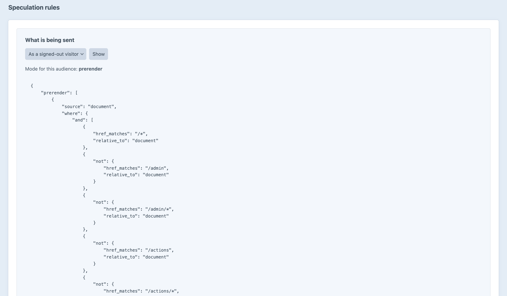

The next page, loaded before the click.
Speculation Rules for Craft — with the pages nobody should ever speculate on excluded before you have to think about it.
Writing the rules is twenty lines. Knowing which links must never be in them is the reason this is a plugin — and Speculatr works it out from your own Craft configuration, not from a list of guesses.
A site that moved its control panel is covered without anybody remembering.
One downloads the page. The other has already finished loading it.
Two hundred milliseconds of hover is a good proxy for having decided.
Default is moderate. The last row is the only one without a queue.
A personalised page is the most expensive one you serve, and the likeliest to do something twice.
Not “what are my rules”, but is it going to prerender the thing that signs people out.
What is on the page for each audience — not a description of it.
